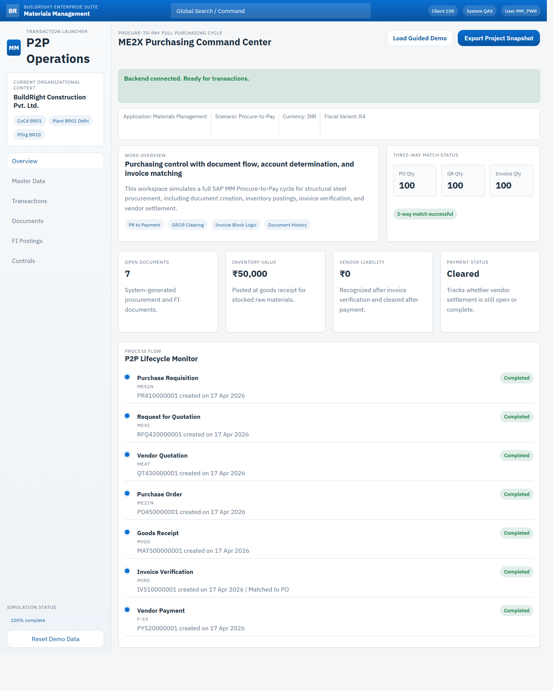
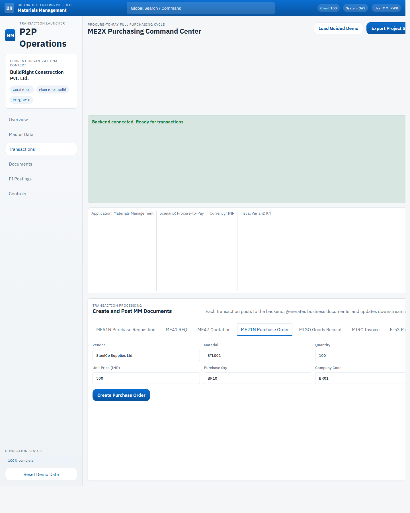
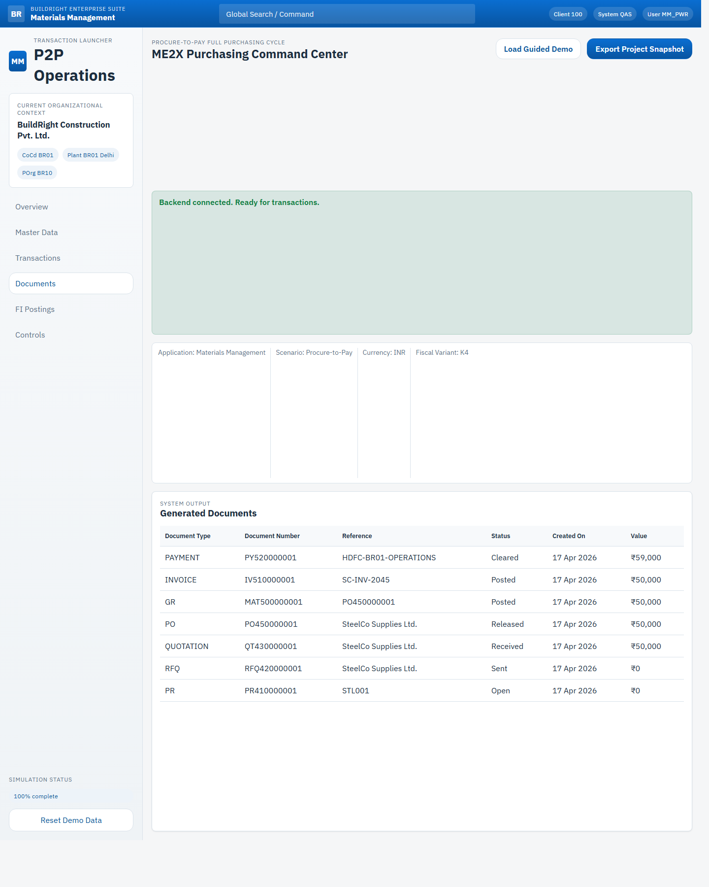
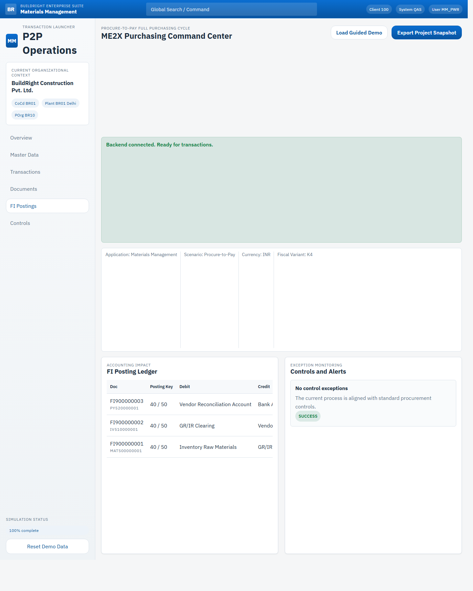
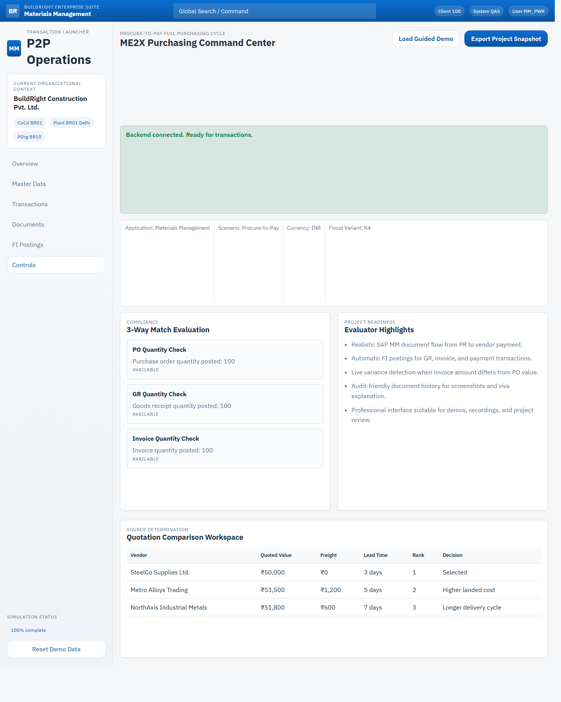

This project demonstrates an industry-grade Procure-to-Pay implementation using an SAP MM inspired full-stack application for BuildRight Construction Pvt. Ltd. The solution models the complete purchasing lifecycle, starting with internal material demand and ending with vendor settlement, while enforcing commercial, inventory, and financial controls.
BuildRight Construction Pvt. Ltd. procures structural steel rods and other raw materials for site execution. In a manual process, purchase requests can be duplicated, prices may not be compared effectively, goods receipts can remain untracked, and finance teams may process invoices without confirming actual material receipt. These issues lead to over-ordering, invoice mismatch, duplicate payment risk, and weak audit visibility. The project addresses these gaps by automating the complete P2P cycle through transaction-driven processing, document history, GR/IR accounting, and 3-way match control.
The solution is built as a full working web application with a Python backend, SQLite persistence, and an SAP-style purchasing interface. It supports the core procurement flow of Purchase Requisition, Request for Quotation, Vendor Quotation, Purchase Order, Goods Receipt, Invoice Verification, and Vendor Payment. Every business event generates realistic document numbers, updates downstream process status, and records FI-style postings.
| Company Code | BR01 | Plant | BR01 (Delhi) |
|---|---|---|---|
| Purchasing Organization | BR10 | Purchasing Group | BR1 |
| Vendor | SteelCo Supplies Ltd. | Material | STL001 - Structural Steel Rods |
| Process Step | Functionality Delivered |
|---|---|
| Purchase Requisition | Captures internal requirement for raw material with plant, quantity, and delivery data. |
| RFQ and Vendor Quotation | Records vendor enquiry and pricing data, supporting source determination and quotation comparison. |
| Purchase Order | Creates an external procurement commitment with company code, purchasing organization, vendor, price, and quantity. |
| Goods Receipt | Posts material receipt against PO, updates inventory value, and creates GR/IR accounting entries. |
| Invoice Verification | Verifies invoice quantity and value against PO and GR, and blocks payment if variance exists. |
| Vendor Payment | Clears vendor liability after successful invoice posting and records bank settlement. |
Frontend: HTML5, CSS3, JavaScript
Backend: Python 3.11 HTTP server
Database: SQLite
Architecture: REST-style API with persistent document storage
Business Domain: SAP MM Procure-to-Pay
Integration Concept: MM-FI through GR/IR and vendor reconciliation entries
Deployment: Localhost web application with ZIP and GitHub-ready source





The completed solution demonstrates how SAP MM based procurement can be represented in a functional software project using realistic process flow, document generation, and accounting integration. By covering PR, RFQ, quotation, PO, GR, MIRO, and vendor payment with control logic and persistent storage, the project delivers both technical implementation value and strong business relevance for academic evaluation.